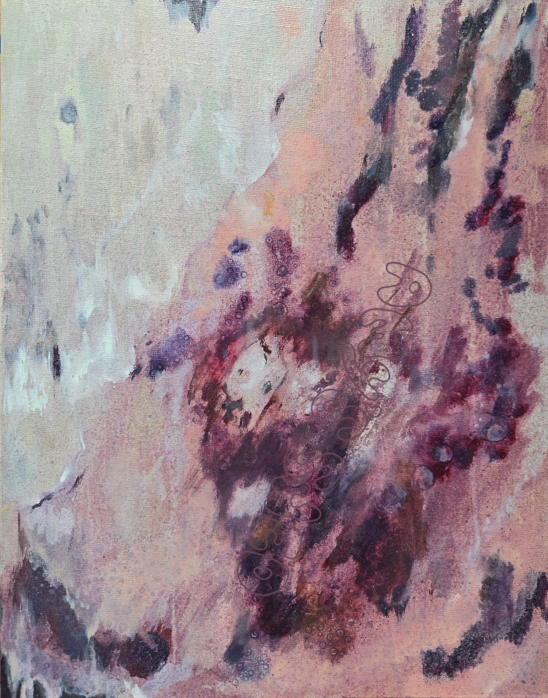
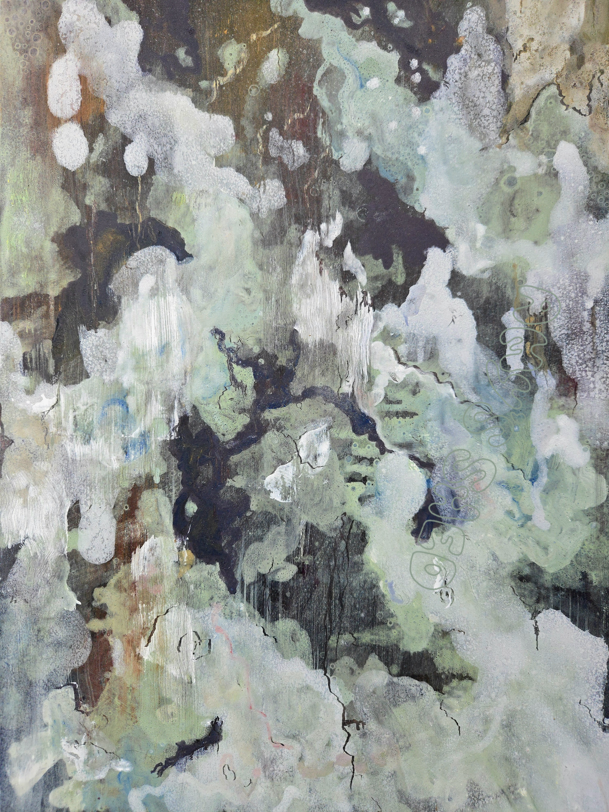
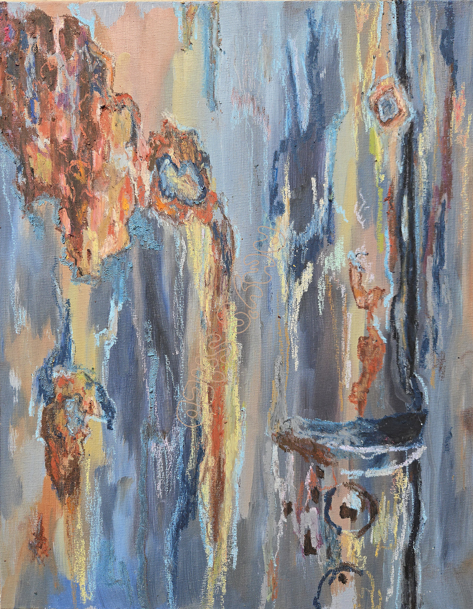

What brings you back down?
The balls of your feet planted
Back in certainty
Air binds to your bloodcells for the first time
Again
Eyes open to see everything
You once saw before
For me, I find the depth
Touch the surface but travel within
Some see skin
I see pulse
Some see iron
I see time
Some see rock
I see the motion of the sea
Some see bark
I see a soul
A life of colours and evolutions
I touch and I am unbound
I look and I am blinded
Alive like prey being hunted
I enter home
-------
My travels in the first half of the year allowed me to connect with nature like I had never afforded myself the time to do before. I love being outside and exploring, but slowing down in Japan and taking it all in allowed my eyes to travel past the surface and find new ways to connect to the earth.
This summer I have spent time translating this energy into paintings, trying to capture the innate sensations of being in nature, and producing art with the intention of inviting people to reconnect.
A reminder of the sanity that comes with paying attention.
The quality of life that comes from connecting to our ancestors through nature.
After the wildfires returned to Europe this summer, this practice has also grown the harrowing extended definition of a means of documentation; recording the effect of time and environment on our natural structures, before there is no environment to record.

When I was walking up an abandond road up to a hydrodam in Kirishima, I walked passed this wall of natural massive rocks that were covered in vibrant colours from elements that had aged over its surface. Kirishima Rock interprets the rocks deep pinks and mint greens and flacky surface.

Kumano Kodo Tree was inspired by a Lacebark Pine tree I saw whilst Hiking a section of the Kumano Kodo pilgramage in Wakayama. The bark of the tree creates chalky circular shapes that overlap like droplets of water.

I was walking on my way to temple 71 of the Shodoshima Pilgramage when I stumbled across a beautiful corrogated iron shed that had been layered with smotherings of paint over the years and finally the rust was biting through. The rust created leech like circles of orange contrasted against the previously yellow, or blue, or grey shed. A true testiment to time and the beauty of ageing.
- Amy